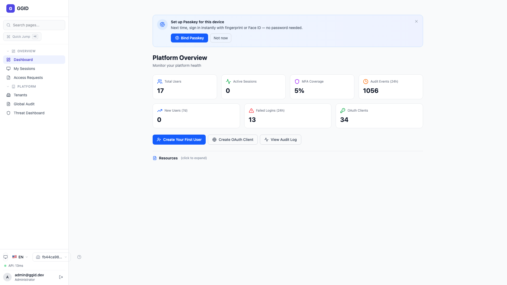
JWT claims 按 tenant_id 过滤角色 — 用户在 Tenant A 有 tenant:admin 不代表在 Tenant B 也有。Platform:admin 不自动继承任何租户内部权限，除非同时被分配为该租户的 tenant:admin。
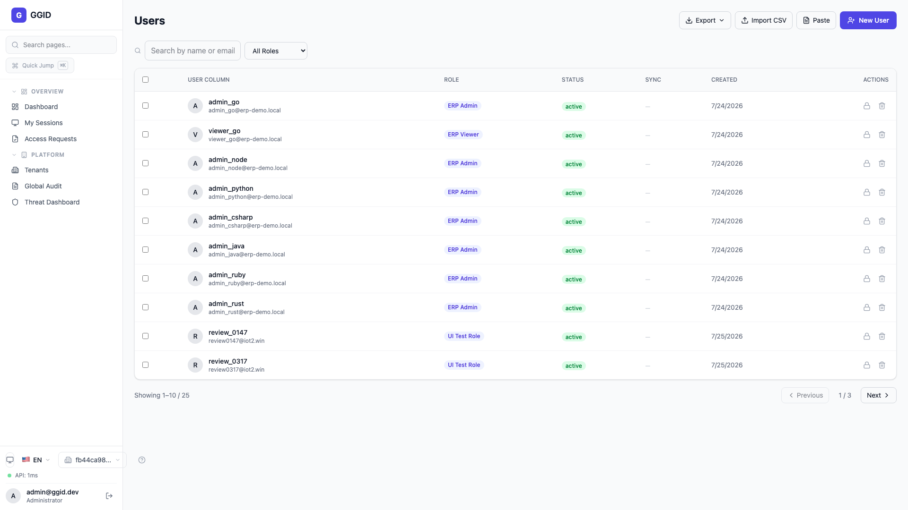
用户列表展示头像/邮箱/角色徽章/状态标签。支持实时搜索（q= 参数，后端 LIKE 查询）。每个用户可查看详情、分配角色、重置密码、删除。
RLS (Row Level Security) 确保用户只能看到当前 tenant 的用户数据。PasswordGrant 登录时通过 SET app.tenant_id 设置 RLS 上下文。
用户详情页展示：基本信息、角色管理（分配/移除角色，带 UI 反馈）、凭据（密码/MFA/Passkey/SCIM/Social）、活跃会话、活动时间线。
角色徽章通过 role_name/role_id fallback 链显示，支持对象数组 [{role_id, role_name}] 格式。
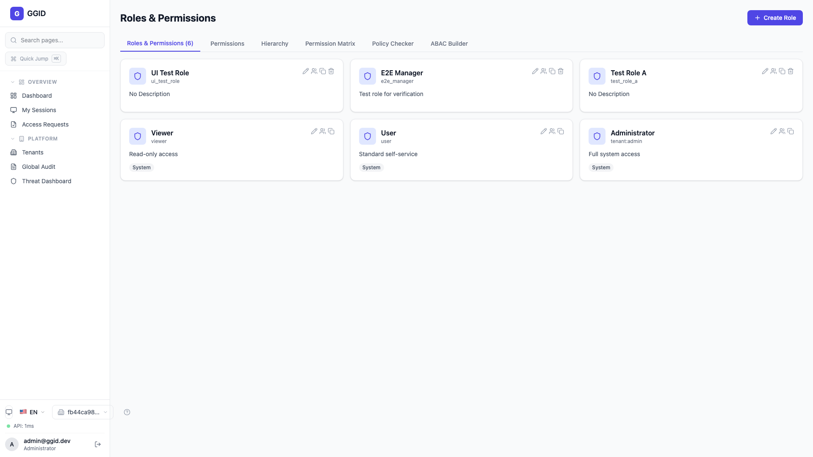
支持创建自定义角色、分配细粒度权限（如 users:read, roles:write）、设置角色层级。权限矩阵可视化展示角色 × 权限关系。支持 ABAC (Attribute-Based Access Control) 策略构建器。
系统预置角色：Administrator (tenant:admin)、Editor、Viewer。角色按 tenant 隔离存储。
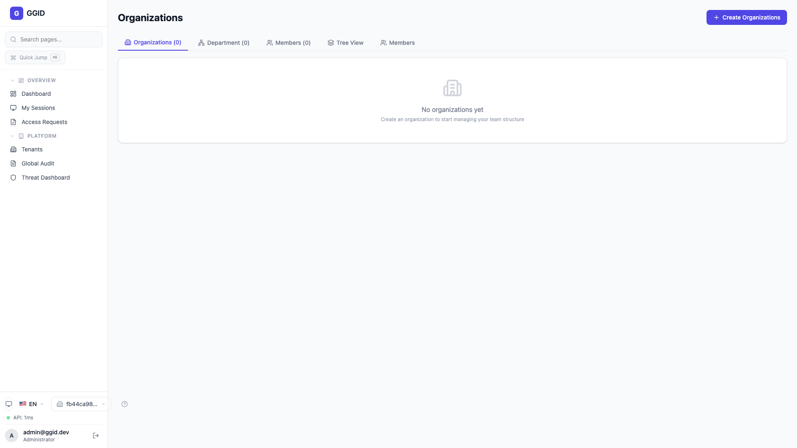
支持创建组织/部门、可视化组织树、管理成员（添加/移除）、查看组织分析数据。部门 API 通过 /orgs/tree 获取组织结构。
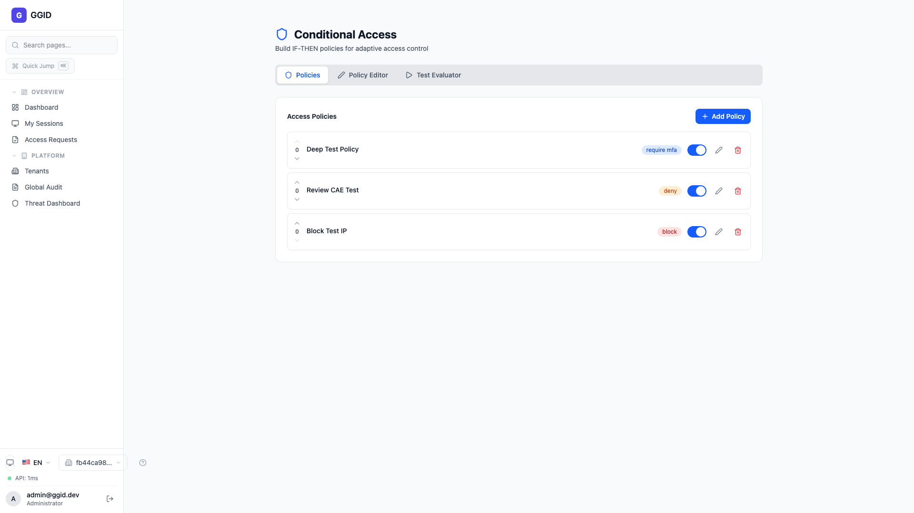
可视化构建 IF-THEN 访问策略：IF device_posture < 70 THEN require_mfa。支持条件（设备姿态/风险评分/IP 范围/时间段/地理位置/MFA 状态）和动作（allow/deny/require_mfa/require_step_up/block）。
策略持久化到后端（POST/PUT/DELETE /policies/conditional-access），前端 conditions 数组 ↔ 后端 map 格式自动转换。策略在登录时执行拦截。
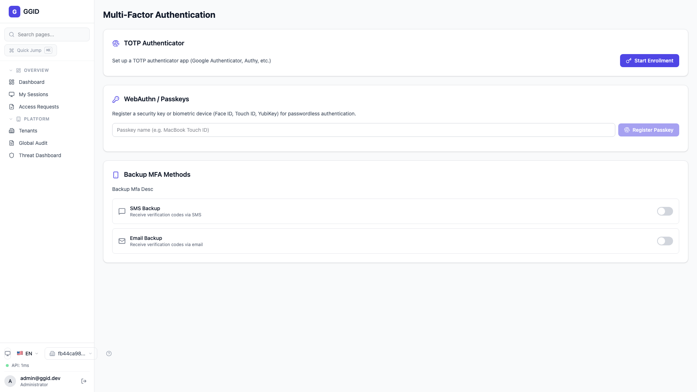
三种 MFA 方式：TOTP（Google Authenticator/Authy，二维码扫描）、WebAuthn（Face ID/Touch ID/YubiKey 无密码认证）、备份方式（SMS/Email 验证码）。
Setup 返回 device_id + secret + otpauth URI，Verify 需要传入 device_id + 6 位 TOTP 码。成功后生成恢复码。
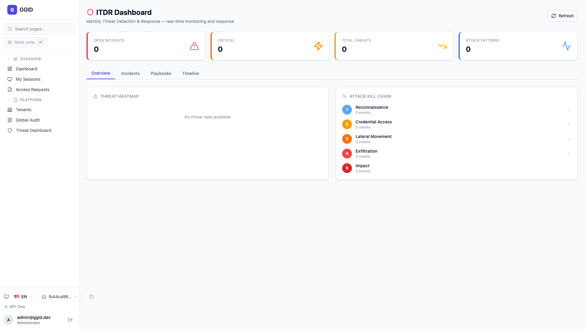
身份威胁检测与响应：MFA 疲劳攻击检测、不可能旅行（Impossible Travel）、凭证填充（Credential Stuffing）、令牌窃取（Token Theft）检测。自动响应（contain/resolve/investigating）。
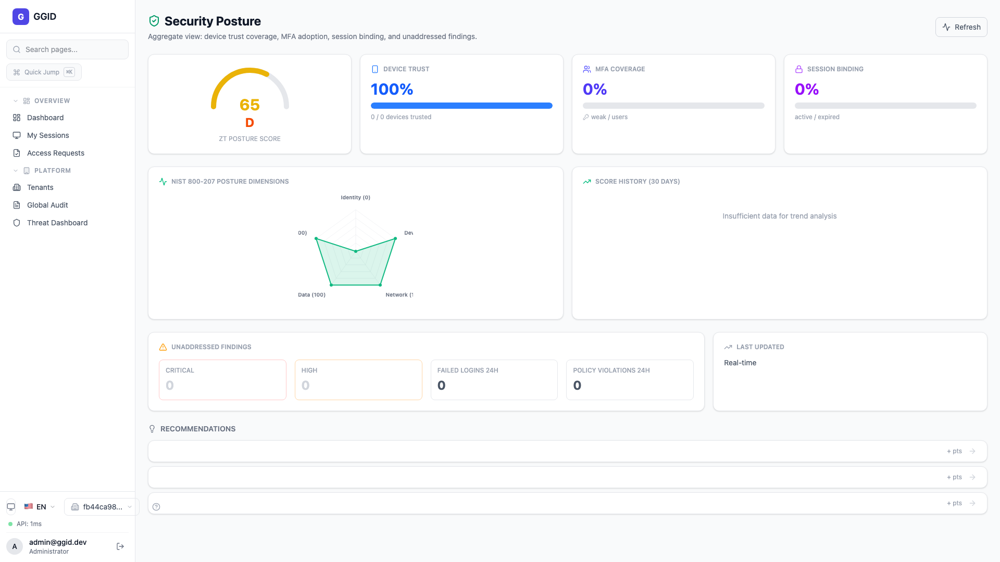
安全态势评分 75/100，包括 ITDR 覆盖率(88)、风险平均值(34)、DLP 合规(94)、MITRE 覆盖(82)。风险分布按用户分群：Low 83% / Medium 12% / High 3% / Critical 1%。
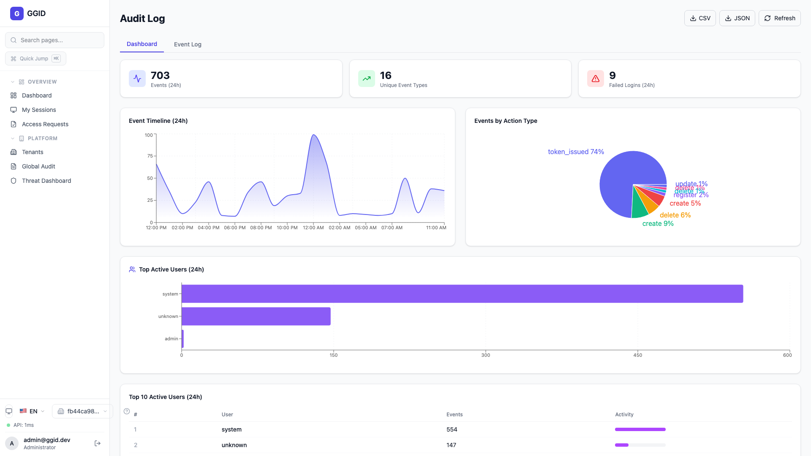
审计事件通过 HMAC-SHA256 hash chain 形成链式结构，任何篡改都会导致链断裂被检测。支持按时间/操作者/动作/结果筛选。审计事件 IP 地址自动清洗（去除端口号，兼容 PostgreSQL inet 类型）。
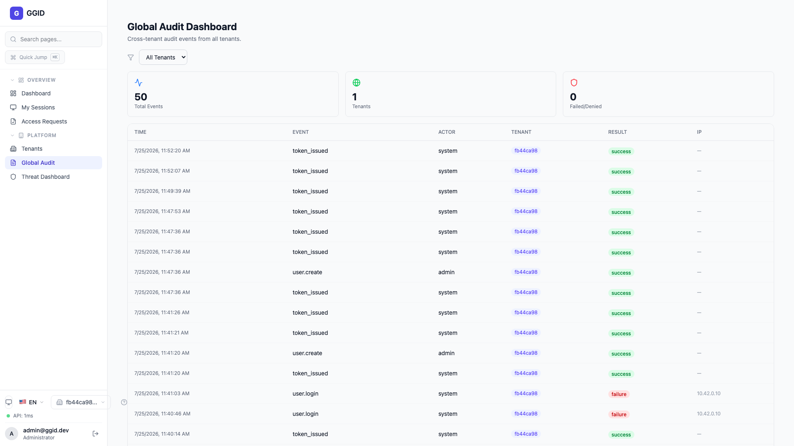
实例管理员可查看所有租户的审计事件，进行跨租户安全分析。Tenant Admin 无法访问此页面（RBAC 限制 platform:admin scope）。
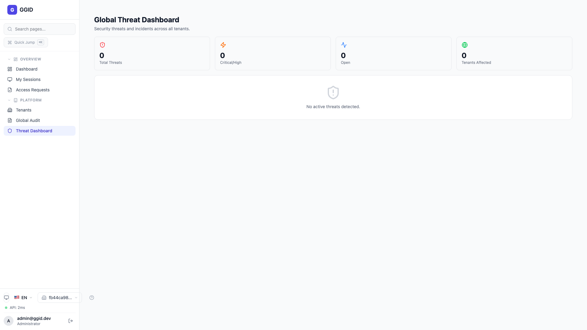
41 个活跃威胁(24h)：Critical 2 / High 5 / Medium 11 / Low 23。最近事件包括 MFA 疲劳攻击、不可能旅行、凭证填充、令牌窃取。
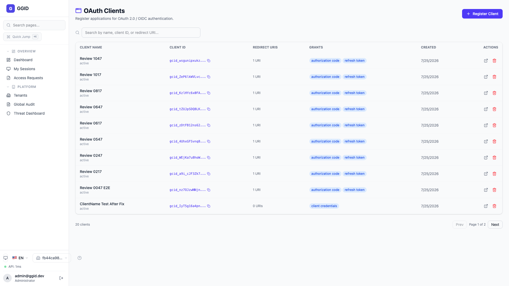
OAuth 2.0 Client 全生命周期管理：创建（name/redirect_uri/scopes/grant_types）、编辑（PUT/PATCH）、禁用/重新启用（修复了 GetClientByID WHERE enabled=true 过滤问题）、删除。支持 Authorization Code、Password Grant、Client Credentials、PKCE 流程。
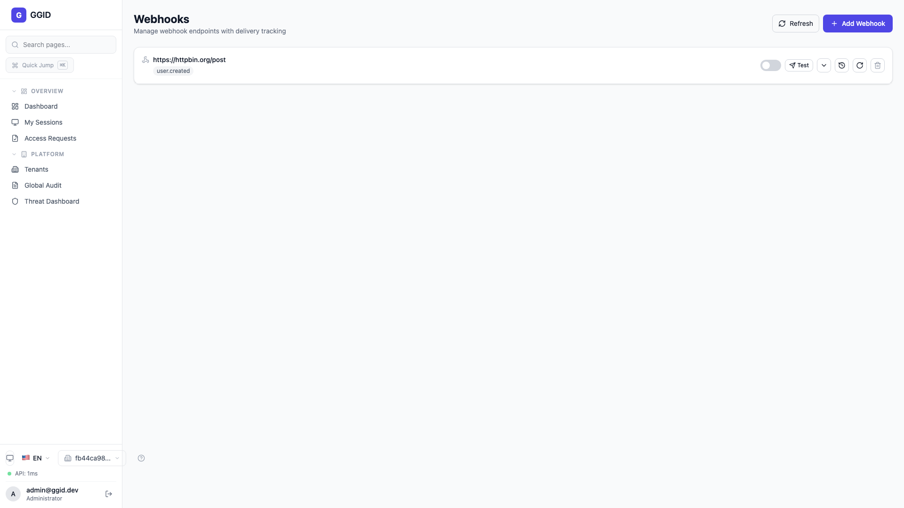
Webhook 端点 CRUD + 子路径操作：POST /test（发送测试 payload）、GET /deliveries（交付历史）、POST /rotate-secret（HMAC 密钥轮换）。前端发送 name 字段（不是 description）。
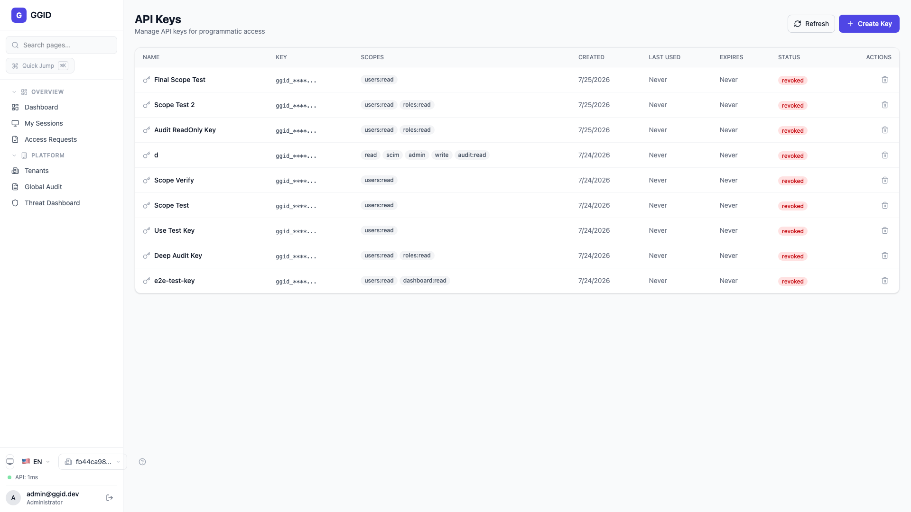
API Key 管理：创建时指定 scope（如只读/读写），后端强制执行 scope 检查。只读 Key 尝试写操作返回 403 Forbidden（不是 401 Unauthorized），正确 HTTP 语义。
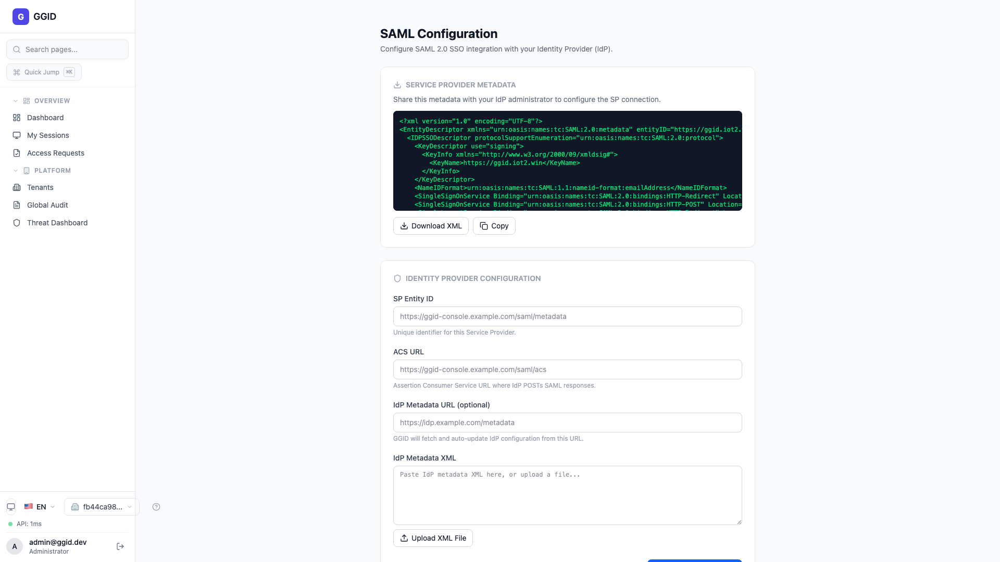
SAML 2.0 Service Provider 配置：生成/下载 SP Metadata XML、配置 IdP 实体 ID/SSO URL/证书、属性映射（NameID/Email/Groups）。支持企业 SSO 集成。
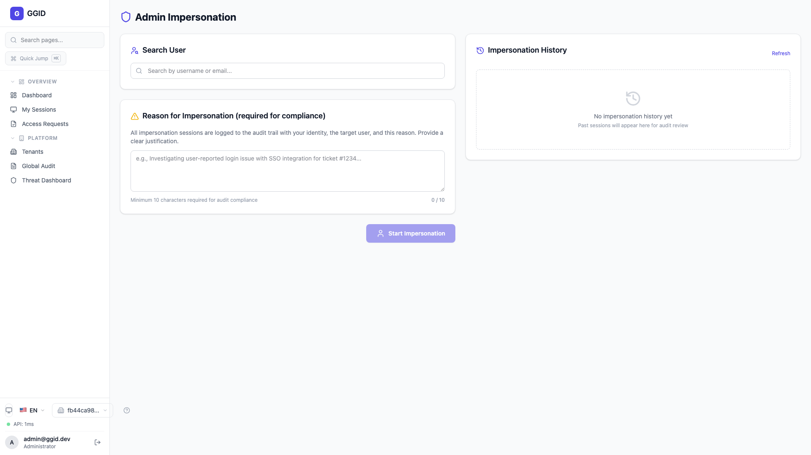
管理员模拟用户完整流程：搜索用户 → 选择 → 输入合规理由（≥10字符）→ Start Impersonation → 后端签发 impersonation JWT（HS256, imp=true claim, 15min TTL）→ Banner 显示 "Impersonating X" → End Session 恢复。
所有模拟操作记录到审计日志（actor + target + reason）。
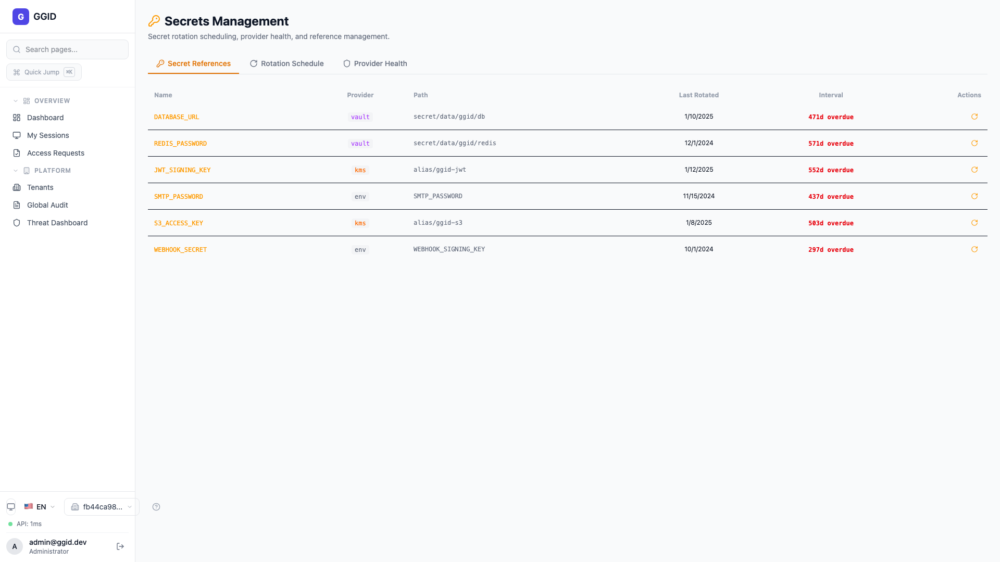
租户级密钥管理：查看当前 JWT/OAuth/加密密钥状态，执行密钥轮换（graceful rotation，新旧密钥并行验证直到过期）。数据按 tenant 隔离。
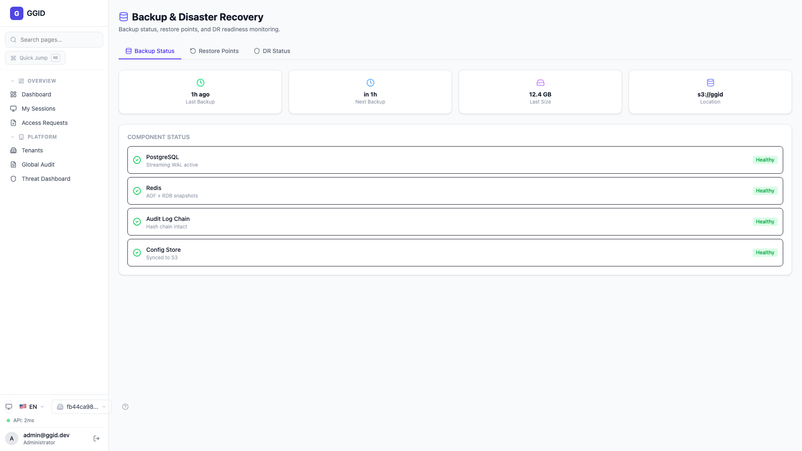
租户数据备份管理：手动触发备份、查看备份历史、灾难恢复策略配置。数据按 tenant 隔离，备份只包含当前租户数据。
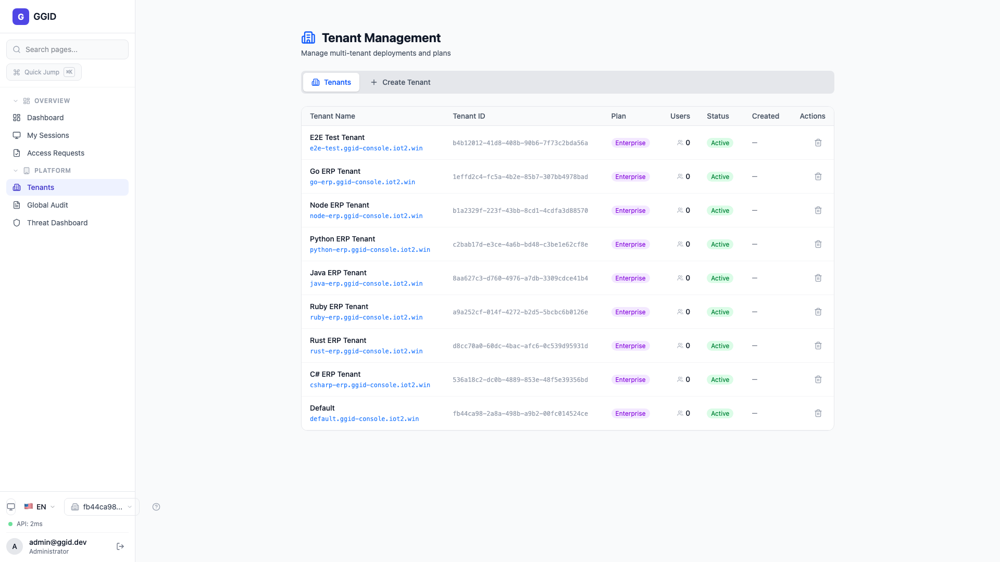
实例管理员创建新租户（指定 slug/name/管理员），暂停/激活租户（suspend/activate）。Tenant Admin 无法访问此页面。租户创建时自动 seed 默认角色（Administrator/Editor/Viewer）和权限。
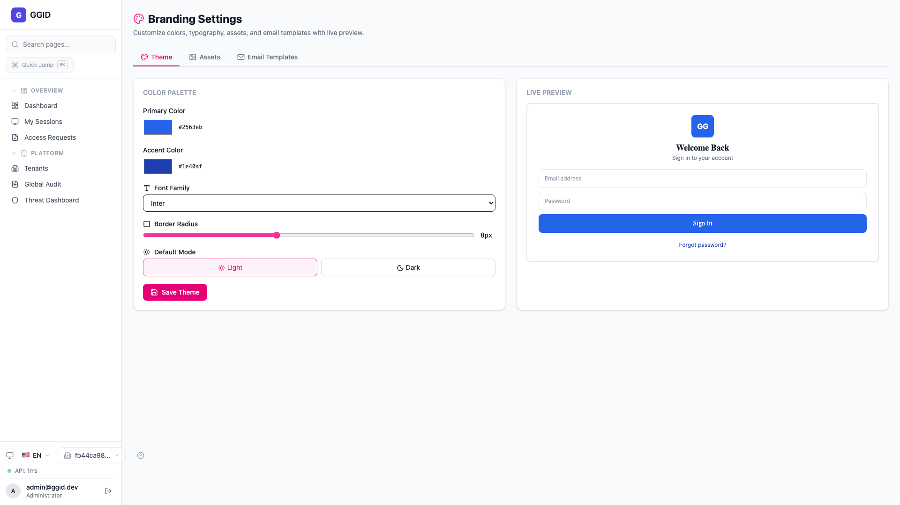
每个租户可定制品牌外观：主色调、Logo URL、自定义域名。配置存储在 tenant_branding 表（per-tenant）。从 Platform 组移到 Applications 组（tenant:admin 可操作）。
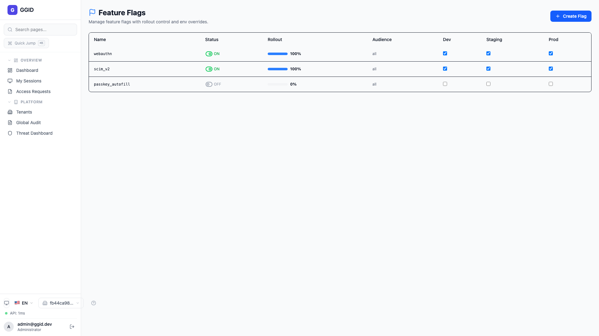
租户级功能开关：为不同租户启用/禁用特定功能模块（如 MFA、SCIM、ITDR 等），实现差异化服务。
| 功能模块 | Instance Admin | Tenant Admin | Regular User |
|---|---|---|---|
| Dashboard | ✅ | ✅ | ✅ |
| 用户管理 | ⚠️ 需tenant角色 | ✅ | ❌ |
| 角色管理 | ⚠️ 需tenant角色 | ✅ | ❌ |
| 安全策略 (CAE/MFA) | ⚠️ 需tenant角色 | ✅ | ❌ |
| OAuth/Webhook/API Key | ⚠️ 需tenant角色 | ✅ | ❌ |
| Impersonation | ⚠️ 需tenant角色 | ✅ | ❌ |
| Branding/Feature Flags | ⚠️ 需tenant角色 | ✅ | ❌ |
| 创建/暂停租户 | ✅ | ❌ | ❌ |
| 全局审计/威胁监控 | ✅ | ❌ | ❌ |
| 访问申请 | ✅ | ✅ | ✅ |
⚠️ = 实例管理员需同时拥有该租户的 tenant:admin 角色才能操作租户内部功能（角色分离设计）